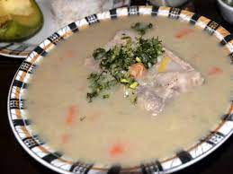
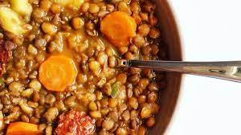
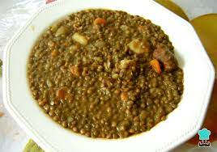
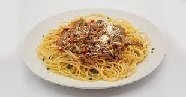
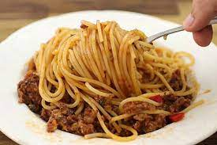

RECETAS





COLICERO
INGREDIENTES
Colicero
- Zanahoria
- Abichuela
- Arvejas
- Papas
- Hueso de marrano
- Especias al gusto
PASOS
- poner a cocinar el hueso de cerdo
- picar las verduras
- raspar el colicero con una cuchara
- poner a hervir las verduras
- cuando las verduras hayan hervido 10 minutos agregar el colicero
- dejar hervir si sal las verduras y el colicero
- cuando ya se haya desecho el colicero un poco agregar el hueso y agregar
sal al gusto y dejar hervir hasta que se desasga todo el colicero
LENTEJAS
INGREDIENTES
- Lentejas
- Zanahoria
- Papa
- Carne o pollo o la presa que desee
PASOS
- Poner a hervir las Lentejas con la presa
- Picar las verduras
- Dejar que herva una media hora las Lentejas y la presa
- Agregar la papas
- Dejar que herva todo hasta estar y disfrutar
PASTAS CON CARNE MOLIDA
INGREDIENTES
- Espaguetis
- Carne molida
- Verdura para guiso
- Especias al gusto
PASOS
- Hervir las pastas en agua con color
- Picar tomate cebolla y pimentón
- Poner a sofreír el guiso
- Agregar la Carne molida al guiso dejar cocinar
- Sacar la pasta del agua y agregar agua fría
- Agregar la pasta al guiso y disfrutar
Ir al INICIO
Ir a Enlace de Mis Viajes